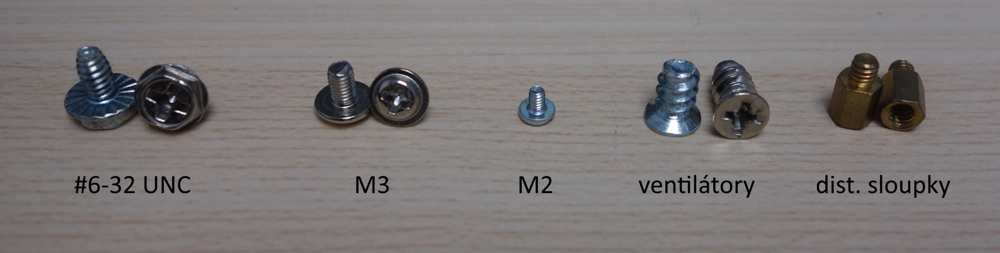
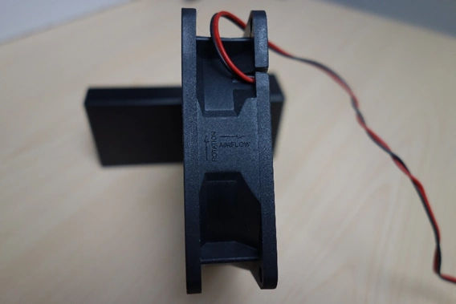

Jak si sestavit počítač v domácích podmínkách
Pokud už máte vybrané komponenty, můžete se poustit do stavby počítače.
Správná montáž osobního počítače není jen o tom propojit jednotlivé komponenty dohromady. Při stavbě je potřeba dodržet několik základních zásad, které pomohou zajistit správnou funkčnost, stabilitu i bezproblémový provoz celé sestavy.
Následující části popisují základní principy a doporučení, které je dobré při sestavování počítače dodržovat. Většinu těchto postupů lze využít také při zásahu do již existující sestavy, například při výměně nebo doplnění jednotlivých komponent.
Příprava pracovního prostředí
Než začnete samotný počítač skládat, vyplatí se připravit si vhodné pracovní prostředí.
Základem je dostatečně velký a stabilní stůl. Ideální je mít počítačovou skříň položenou naležato a kolem ní dostatek místa na rozložení komponent, které budete postupně instalovat. Hodně důležité je také dobré osvětlení, protože při montáži často potřebujete správně rozpoznat konektory nebo orientaci jednotlivých součástek.
Praktické je připravit si i malou nádobu nebo magnetickou podložku na šroubky. Při stavbě počítače jich bývá překvapivě hodně a hledání zapadlého šroubku po zemi obvykle není úplně zábava.
Počítač není ideální skládat na koberci nebo podobném povrchu, který může vytvářet elektrostatický náboj. Ten by mohl citlivé komponenty poškodit.
Před montáží je také dobré mít čisté a suché ruce a sundat si hodinky, prsteny nebo náramky. Kovové předměty jsou vodivé a při neopatrné manipulaci by mohly komponenty poškrábat nebo jinak poškodit.
Ještě před začátkem montáže si připravte spojovací materiál, který bývá přibalený ke skříni, a také potřebné nářadí. Při stavbě počítače narazíte na několik různých typů šroubů, které se liší velikostí i závitem. Ve většině případů se používají šrouby typu Phillips , takže si většinou vystačíte s klasickým křížovým šroubovákem.
Nejpoužívanější typy šroubů a spojovacího materiálu
-
#6-32 UNC
Používá se hlavně pro uchycení napájecího zdroje, 3,5" pevných disků, grafické karty, základní desky a někdy také bočnic skříně. Z běžně přibalených šroubů má nejhrubší závit. Nejčastěji se utahuje křížovým šroubovákem Phillips PH2, u menších hlav někdy PH1. -
M3
Používá se hlavně pro připevnění 2,5" SSD a HDD a někdy také základní desky. Má jemnější závit než #6-32 UNC a většinou se utahuje šroubovákem Phillips PH1. -
M2
Velmi malý šroubek určený pro upevnění M.2 SSD disku k základní desce. Obvykle bývá přibalený přímo u základní desky a používá se na něj šroubovák Phillips PH0 nebo PH00. -
Šrouby pro ventilátory
Speciální šrouby se samořezným závitem určené pro plastové rámy ventilátorů. Nejčastěji se utahují šroubovákem Phillips PH2. -
Distanční sloupky
Vytvářejí mezeru mezi základní deskou a kovovým šasi skříně, aby nedošlo ke zkratu. Dotahují se klíčem velikosti 5 mm nebo například kleštěmi.

Při montáži je dobré používat správné nářadí. Například křížový šroubovák typu Pozidriv (PZ) vypadá na první pohled velmi podobně jako Phillips (PH), ale liší se tvarem drážky. Pokud použijete nesprávný typ, může šroubovák sklouznout z hlavy šroubu a při neopatrné manipulaci poškodit například základní desku nebo jinou komponentu.
Vyplatí se také nechat si na stavbu dostatek času. Montáž počítače není dobré uspěchat, protože zbytečný spěch často vede k chybám nebo v horším případě i k poškození komponent. Pokud stavíte počítač poprvé, může celý proces bez problému zabrat i několik hodin.
Bezpečnostní opatření při montáži
Jedním z hlavních rizik při stavbě počítače je elektrostatický výboj (ESD), který může poškodit citlivé elektronické součástky. V profesionálním prostředí se používají antistatické náramky nebo podložky, ale doma tyto pomůcky většina lidí běžně nemá. I bez nich ale stačí dodržovat několik základních pravidel.
Před manipulací s komponentami je dobré dotknout se uzemněného kovového předmětu, například kovové části uzemněného spotřebiče. Tím dojde k vybití elektrostatického náboje z těla. Pokud nic takového není po ruce, můžete se při instalaci komponent dotýkat kovové části zadních konektorů základní desky a tím vyrovnat potenciál mezi vámi a deskou. Díky tomu se případný výboj nevybije přes samotnou komponentu.
S komponentami je potřeba zacházet opatrně. Ideální je držet je za okraje a zbytečně se nedotýkat elektrických kontaktů nebo povrchu plošných spojů. Z ochranného obalu je nejlepší je vybalit až těsně před instalací. Komponenty by také neměly ležet na vodivých nebo nevhodných površích. Pokud je potřeba některou část na chvíli odložit, nejlepší je vrátit ji zpět do původního obalu.
Při instalaci jednotlivých komponent nikdy nepoužívejte zbytečně velkou sílu. Pokud některý díl nejde snadno zasunout nebo upevnit, bývá problém většinou v nesprávné orientaci. Použití síly může vést k trvalému poškození komponent. Typickým příkladem je procesor. Při správném postupu prakticky není potřeba žádná síla. Pokud procesor nejde vložit do patice, bývá špatně otočený nebo není správně otevřená patice.
Opatrnost je dobré dodržovat i při zapojování kabelů. Konektory bývají většinou navržené tak, aby šly zapojit pouze jedním správným způsobem, takže pokud něco nejde snadno zasunout, není dobrý nápad to lámat silou.
Pokud máte všechno nachystané, můžeme začít. Před samontou instalací podoručuju shlédnout video, které tyto kroky ukazuje a začátčeník je tak může lépe pochopit.
Montáž osobního počítače
Nyní si projdeme postup sestavení osobního počítače v domácích podmínkách – od vybalení jednotlivých komponent až po přípravu sestavy k prvnímu spuštění.
U některých kroků je dobré dodržet doporučené pořadí, protože může výrazně usnadnit práci a snížit riziko chyb nebo komplikací při montáži. U jiných částí na pořadí naopak příliš nezáleží. Samotný postup se navíc může mírně lišit podle konstrukce počítačové skříně nebo typu použitých komponent - například podle způsobu uchycení chladiče procesoru.
Ještě před montáží základní desky do skříně se většinou vyplatí osadit procesor, operační paměť, M.2 SSD a případně i chladič procesoru. Mimo skříň bývá kolem základní desky více prostoru a přístup k jednotlivým slotům a konektorům je výrazně pohodlnější.
Instalace procesoru
Prvním krokem při montáži počítače bývá příprava základní desky a instalace procesoru. Základní desku je vhodné vyjmout z obalu a položit ji na nevodivý povrch, ideálně například na původní krabici.
Poté můžete přistoupit k instalaci procesoru. Procesor je potřeba opatrně vyjmout z obalu a držet jej pouze za okraje, aby nedošlo ke znečištění nebo poškození kontaktů.
Před vložením procesoru je nutné otevřít patici na základní desce. U moderních patic typu LGA se to provádí uvolněním zajišťovací páčky a odklopením krycího mechanismu. Patice bývá chráněna plastovým krytem, který lze v této chvíli odstranit.
Patice typu PGA fungují trochu jinak. Nemají krycí mechanismus, ale pouze zajišťovací páčku, jejímž uvolněním se patice otevře.
Procesor následně vložte do patice tak, aby byla správně orientovaná jeho poloha. Správnou orientaci obvykle označuje malý trojúhelník na rohu procesoru a stejná značka na patici základní desky. Pokud je procesor otočen správně, měl by do patice zapadnout bez použití síly.
Po usazení procesoru stačí patici zavřít a zajistit pomocí páčky. Při zavírání může být potřeba vyvinout mírný tlak, což je u některých patic běžné a neznamená to chybu při instalaci.
Instalace operační paměti
Dalším krokem je instalace operační paměti do základní desky. Pokud osazujete více modulů RAM, je dobré řídit se manuálem výrobce základní desky. Důležité je to hlavně kvůli správnému zapojení dual channelu.
Před vložením paměťového modulu je potřeba otevřít zajišťovací mechanismus slotu. U některých desek najdete zajišťovací klipy z obou stran, jiné mají klip pouze z jedné strany. Paměťový modul následně zasuňte do slotu tak, aby správně seděl výřez na konektoru. Díky tomu není možné modul vložit opačně. Modul zatlačte do slotu, dokud nezacvaknou zajišťovací klipy. Při instalaci je potřeba použít mírný tlak, což je u operační paměti běžné.
U větších chladičů procesoru může po jejich instalaci dojít k omezení přístupu k paměťovým slotům. Z tohoto důvodu bývá praktičtější osadit operační paměť ještě před montáží chladiče procesoru.
Instalace SSD disku
Dalším krokem je instalace SSD disku ve formátu M.2. Tento typ disku se připojuje přímo k základní desce, takže není potřeba zapojovat datové ani napájecí kabely.
Před instalací je potřeba vyšroubovat upevňovací šroubek na konci M.2 slotu, případně sundat chladič SSD. Disk se následně zasune do konektoru pod mírným úhlem (přibližně 35°) [32]. Po úplném zasunutí stačí disk přitlačit směrem k základní desce, případně vrátit chladič a SSD zajistit šroubkem.
Po instalaci grafické karty nebo dalších PCI Express karet může být přístup k M.2 slotům výrazně horší. Proto bývá praktičtější osadit M.2 SSD ještě před montáží těchto komponent.
Kontrola baterie
Součástí základní desky bývá také baterie, která napájí paměť CMOS a udržuje nastavení BIOSu i systémový čas. Ve většině případů je baterie osazená už z výroby a bývá zajištěná ochranným plastovým prvkem, který je potřeba před prvním spuštěním odstranit. Pokud baterie osazená není, je nutné ji vložit do držáku na základní desce. Nejčastěji se používá baterie typu CR2032. Po instalaci grafické karty nebo dalších PCI Express karet může být přístup k baterii výrazně horší. Proto se vyplatí její přítomnost zkontrolovat ještě před osazením těchto komponent.
Instalace chladiče procesoru
Dalším krokem je instalace chladiče procesoru, který odvádí teplo vznikající při jeho provozu. U větších a těžších chladičů bývá někdy praktičtější jejich montáž odložit až po instalaci základní desky do skříně. Rozměrný chladič totiž může překážet při manipulaci s deskou nebo zhoršit přístup k upevňovacím bodům.
Samotný postup instalace se může lišit podle konkrétního typu chladiče, proto je vždy dobré podívat se do manuálu výrobce. Některé chladiče používají montážní rámeček (backplate), který je potřeba nejprve připevnit k základní desce. Nový chladič může mít už z výroby nanesenou teplovodivou pastu. Pokud ji nemá, je potřeba ji před montáží nanést na procesor. Nejčastěji se používá malé množství pasty doprostřed procesoru, přibližně o velikosti hrášku. Po přitažení chladiče se pasta tlakem rovnoměrně rozprostře.
Chladič se následně přiloží na procesor a upevní pomocí šroubů nebo jiného mechanismu. Při dotahování je dobré postupovat rovnoměrně a šrouby postupně střídat po několika otáčkách, aby se tlak rozložil co nejrovnoměrněji. Některé chladiče mají ventilátor už předinstalovaný, u jiných se montuje až po upevnění samotného chladiče.
U opravdu velkých chladičů se může stát, že ventilátor bude zasahovat nad sloty operační paměti. Některé chladiče ale umožňují ventilátor výškově posunout, čímž lze tento problém vyřešit.
Po upevnění chladiče a ventilátoru je ještě potřeba připojit ventilátor do konektoru na základní desce, který bývá označen jako CPU_FAN. Jeho umístění se může lišit podle modelu základní desky, takže se vyplatí podívat do manuálu.
Příprava skříně a montáž zdroje
Před samotnou montáží komponent je dobré připravit počítačovou skříň. Nejprve je potřeba sundat bočnice a případně také přední panel, pokud to konstrukce skříně umožňuje. Díky tomu získáte lepší přístup do vnitřního prostoru a následná montáž bude pohodlnější.
Vyplatí se také zkontrolovat vnitřní uspořádání skříně a rozmístění montážních pozic pro jednotlivé komponenty. Pokud je potřeba, lze dočasně vyndat například koše pro disky nebo kryty kabeláže, aby bylo uvnitř více místa.
Dalším krokem bývá instalace napájecího zdroje. Ten se umisťuje do vyhrazeného prostoru ve spodní nebo horní části skříně. Důležité je zvolit správnou orientaci ventilátoru s ohledem na proudění vzduchu. Pokud je zdroj umístěný dole, ventilátor obvykle směřuje dolů k větracímu otvoru, aby nasával chladnější vzduch zvenku. U zdroje umístěného nahoře bývá ventilátor většinou orientovaný směrem dolů a pomáhá odvádět teplý vzduch ze skříně.
Zdroj se následně upevní pomocí šroubů. U modulárních zdrojů je praktické zapojit pouze kabely, které budou opravdu potřeba. Ve skříni pak zůstane méně kabeláže a lépe se organizuje proudění vzduchu. U nemodulárních zdrojů je dobré přebytečné kabely uspořádat tak, aby nepřekážely ventilátorům ani proudění vzduchu uvnitř počítače.
Instalace ventilátorů
Dalším krokem je instalace ventilátorů, které zajišťují proudění vzduchu a odvádění tepla z počítačové skříně. Ještě před montáží je dobré promyslet airflow, tedy způsob proudění vzduchu skrz skříň. Nejčastěji ventilátory nasávají chladný vzduch přední částí skříně a odvádějí teplý vzduch zadní nebo horní částí ven.
Při instalaci je důležité správně otočit ventilátory. Na jejich rámu bývají většinou vyznačené šipky – jedna ukazuje směr proudění vzduchu (Airflow) a druhá směr otáčení lopatek (Rotation).
Při návrhu airflow je dobré myslet také na poměr mezi nasáváním a odvodem vzduchu. Pokud do skříně proudí o něco více vzduchu, než kolik se odvádí ven, vzniká mírný přetlak, který může pomoci omezit usazování prachu uvnitř skříně.

Ventilátory se upevňují pomocí šroubů nebo speciálních antivibračních prvků. Při dotahování není dobré používat zbytečně velkou sílu, protože by mohlo dojít k poškození plastového rámu ventilátoru.
Společně s ventilátory lze instalovat také RGB osvětlení. To slouží pouze jako designový prvek a nemá vliv na výkon počítače.
Ventilátory je možné namontovat ještě před vložením základní desky do skříně nebo až po něm. Záleží hlavně na konstrukci skříně a na tom, kolik prostoru zůstane pro pohodlnou manipulaci.
Vložení základní desky do skříně
Po přípravě skříně a instalaci základních komponent je možné přistoupit k montáži základní desky.
Ještě před vložením desky je potřeba zkontrolovat správné rozmístění distančních sloupků ve skříni. Ty musí odpovídat montážním otvorům základní desky. Pokud ve skříni zůstane některý sloupek navíc na špatném místě, může po usazení desky způsobit zkrat a poškodit základní desku nebo další komponenty.
Před samotným vložením základní desky do skříně je také potřeba osadit do zadní části skříně I/O shield, tedy kovový kryt zadních konektorů. Ten bývá přibalený k základní desce. Po namontování desky už jej většinou nelze dodatečně vložit. Některé moderní základní desky mají I/O shield integrovaný přímo na sobě.
Poté je možné základní desku opatrně vložit do skříně a zarovnat ji s montážními otvory a zadními konektory. Po správném usazení se deska upevní pomocí šroubů do distančních sloupků. Šrouby je dobré dotahovat s citem, aby nedošlo k poškození desky nebo závitů.
Instalace pevného disku
Dalším krokem může být instalace přídavného 3,5" pevného disku, který se často používá jako cenově dostupné úložiště pro větší množství dat. Pokud sestava klasický pevný disk neobsahuje, je možné tento krok jednoduše přeskočit.
Disk se umisťuje do připravené pozice ve skříni, nejčastěji do diskového koše. Upevnění probíhá pomocí šroubů nebo bezšroubového mechanismu podle konstrukce konkrétní skříně. Po usazení je ještě potřeba připojit napájecí SATA konektor ze zdroje.
Připojení kabeláže
Po vložení základní desky do skříně přichází na řadu zapojení kabeláže, která zajišťuje napájení, ovládání a komunikaci mezi jednotlivými komponentami. Rozložení konektorů se může u různých základních desek lišit, takže je dobré mít po ruce manuál výrobce.
Nejprve je potřeba připojit hlavní 24pinový napájecí konektor a také doplňkové napájení procesoru, které bývá řešeno 4pinovým nebo 8pinovým konektorem v blízkosti patice procesoru.
Pokud používáte další úložiště, je potřeba připojit také jejich datové kabely, například SATA kabely propojující pevné disky nebo SSD se základní deskou.
Dále přichází na řadu kabely předního panelu skříně. Ty slouží pro tlačítko napájení, resetovací tlačítko nebo signalizační LED diody. Jde o jedny z mála konektorů, které nemají mechanické klíčování, takže je lze zapojit i opačně. Součástí může být také připojení malého reproduktoru označovaného jako PC speaker, který slouží k diagnostice pomocí zvukových signálů při startu počítače.
U tlačítek nezáleží na polaritě, takže fungují i při opačném zapojení. U LED diod je ale správná polarita důležitá.
Součástí předního panelu bývají také USB porty a konektor pro sluchátka. Tyto konektory už mají bezpečnostní zářezy, takže je není možné zapojit opačně.
Ventilátory skříně se připojují ke konektorům na základní desce, které bývají označeny například jako SYS_FAN nebo CHA_FAN. Pokud konektory nestačí, lze použít rozdvojky nebo řetězení ventilátorů, pokud to jejich konstrukce podporuje.
Při zapojování kabelů je dobré myslet i na jejich vedení. Přehledně uspořádaná kabeláž pomáhá lepšímu proudění vzduchu uvnitř skříně a zároveň usnadňuje případné budoucí úpravy nebo servis.
Pokud nebyl chladič procesoru kvůli svým rozměrům instalován dříve, je vhodné jej namontovat nyní.
Instalace grafické karty
Pokud počítač nebude využívat pouze integrovanou grafiku v procesoru, přichází na řadu instalace samostatné grafické karty. Ta se osazuje do PCI Express x16 slotu na základní desce.
Před montáží je dobré zkontrolovat, zda je otevřený zajišťovací mechanismus PCI Express slotu, a případně odstranit záslepky na zadní straně skříně.
Grafická karta se následně zasune do slotu tak, aby správně dosedla a zacvakl zajišťovací mechanismus. Poté se karta upevní ke skříni pomocí šroubů. Pokud grafická karta vyžaduje přídavné napájení, je potřeba připojit také napájecí kabely ze zdroje.
Moderní grafické karty bývají často velmi rozměrné, takže po jejich instalaci může být výrazně horší přístup k některým částem základní desky. Typicky jde například o konektory předního panelu, M.2 sloty, baterii CMOS nebo SATA konektory.
Kompletace skříně a závěrečná kontrola
Po dokončení instalace všech komponent a zapojení kabeláže je dobré zkontrolovat vedení kabelů a případně je uchytit pomocí suchých zipů nebo stahovacích pásek.
Následuje finální kontrola celé sestavy. Je vhodné ověřit správné zapojení všech kabelů, upevnění komponent a také to, že kabeláž neomezuje proudění vzduchu uvnitř skříně. Zvláštní pozornost je dobré věnovat ventilátorům – žádný kabel by neměl zasahovat do jejich prostoru nebo bránit jejich otáčení.
Po kontrole je možné nasadit bočnice a případně další panely skříně. Při prvním spuštění ale bývá praktické nechat jednu bočnici otevřenou a zkontrolovat, jestli se správně roztočí ventilátory a jestli se sestava chová tak, jak má.
Pokud skříň nepoužívá bočnice na pantech, bývá pohodlnější je definitivně přišroubovat až po ověření správné funkčnosti počítače.
První spuštění počítače
Pokud je vše správně zapojené a zkontrolované, může přijít první spuštění nově sestaveného počítače.
Připojení periferií
Před prvním spuštěním počítače je potřeba připojit základní periferie, tedy monitor, klávesnici a případně také myš. Nakonec připojíme napájecí kabel. Pokud je v počítači osazená samostatná grafická karta, musí být monitor připojený právě do jejích obrazových výstupů, nikoliv do výstupů na základní desce.
Po připojení všech zařízení je dobré zkontrolovat, že je vypínač na zdroji v poloze ON a monitor je zapnutý. Poté už lze počítač spustit tlačítkem na předním panelu skříně.
Kontrola běžící sestavy
Po zapnutí počítače by mělo dojít k inicializaci komponent a spuštění základního testu označovaného jako POST (Power-On Self-Test).
V této chvíli je dobré sledovat chování celé sestavy. Zkontrolujte, zda se roztočí všechny ventilátory, jestli nejsou slyšet chybové zvukové signály, zda základní deska nesignalizuje problém pomocí diagnostických LED a jestli se zobrazí obraz na monitoru.
Pokud počítač úspěšně naběhne, můžete vstoupit do prostředí BIOS/UEFI a zkontrolovat, zda systém správně rozpoznal všechny nainstalované komponenty.
3.4.3 Řešení problémů při prvním spuštění Pokud počítač při prvním spuštění vykazuje nezvyklé chování, je vhodné postupně zkontrolovat zapojení kabeláže a správné osazení jednotlivých komponent. Při diagnostice lze využít signalizaci pomocí LED diod na základní desce nebo zvuko-vých signálů reproduktoru (PC speaker). První spuštění může trvat déle než běžné zapnutí, například kvůli inicializaci operační paměti nebo detekci nově připojených zařízení.